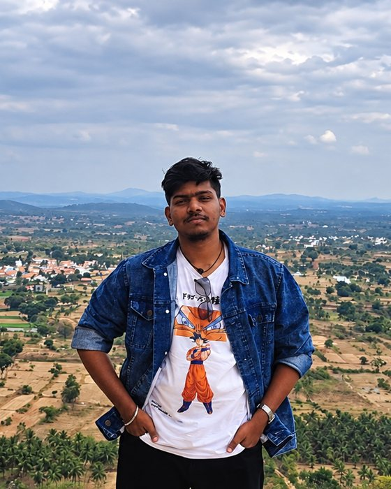

A little world about me
Hey, I'm Someesvaar.
A curious mind, a builder at heart, and a work in progress.
Welcome to my little corner of the internet. I'm a Computer Science student who loves exploring how technology works, experimenting with new ideas, and turning things I imagine into things I can actually build.
Every idea starts somewhere. This is mine.

Always curious.
Curiosity is where it all begins.
I'm Someesvaar V., a Computer Science and Engineering student at Bangalore Institute of Technology, graduating in 2027.
I've always been interested in what happens behind the screen: how software works, how intelligent systems make decisions, and how different technologies can come together to solve real problems.
For me, learning doesn't stop when a class ends. Sometimes a concept turns into a small experiment. Sometimes that experiment grows into a project. And sometimes it leads me into something I didn't expect to learn at all.
I enjoy building, troubleshooting, experimenting, and figuring things out step by step. I don't expect to know everything already. I want to keep getting better at asking good questions and finding ways to answer them.
- Degree
- Computer Science and Engineering
- College
- Bangalore Institute of Technology
- Graduating
- 2027 (expected)
- Current focus
- Software engineering, AI, automation, and practical problem-solving
How I learn
- Get curious.
- Experiment and build.
- Learn from what happens.
The things I work with.
A growing toolkit.
I like learning technologies by using them to make something. My toolkit keeps growing as I explore different kinds of problems.
Technologies and areas I've worked with or explored, not claims of expert-level proficiency.
My development loop
- Idea
- Experiment
- Build
- Test
- Improve
Ideas made real.
Things I've built
Every project starts with a question. These are some of the things I've explored while learning how to turn ideas into working systems.
Still under construction.
I'm just getting started.
I don't have every part of my future figured out, and I don't think I need to.
I want to become an engineer who can move comfortably between ideas and implementation—someone who understands not only how to build something, but why it should exist in the first place.
I'm interested in exploring AI, software engineering, automation, and the possibilities that emerge when different technologies come together.
I want to keep creating things that solve meaningful problems, keep learning from mistakes, and keep challenging myself to build things I haven't built before.
I hope that when I look back years from now, I'll see a collection of ideas I imagined, struggled with, learned from, and eventually brought to life.
Still curious. Still experimenting. Still building.
Thanks for taking a little walk through my world.